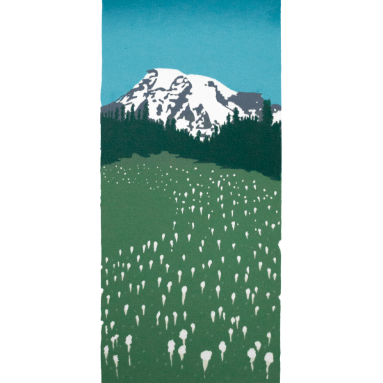

Screenprint Poster Series
2014 - 2017
As part of becoming an independent freelancer I wanted to set aside time to focus on developing my own voice as an artist and designer. One of the projects I've started in this effort is devising a way to screen print posters at home, using supplied and equipment that i can set-up and tear down and store away when I'm done. I drew upon the screen printing experience from my school days and side projects to come up with a unique process of creating the image, transferring it to the screen, and layering the graphics to maximize the variety of color and effects I can get out of the ink.
This series of posters is inspired by places in the US I have traveled to in recent years, like the Olympic National Forest in Washington, Mount Rainier, the Oregon Coast and the low country in South Carolina.
